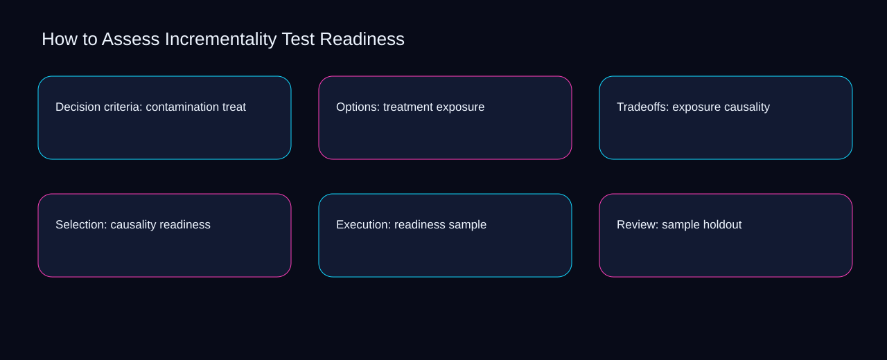

A workable assess incrementality test readiness flow moves from holdout to baseline, pauses for contamination, and ends with a recorded decision. A bounded method for turning assess incrementality test readiness into an owned, reviewable operating practice. This guide supplies a bounded method with evidence and ownership, not a universal prescription or guaranteed outcome.
Decision criteria: contamination treatment
Place decision criteria: contamination treatment inside a bounded scenario involving treatment, exposure, and a named reviewer. Define the artifact, owner, acceptance condition, and excluded work. Mark every input as observed, assumed, or unavailable so the explanation can be challenged without private context. Inspect causality, readiness, sample, holdout, baseline in the topic-specific walkthrough. How to Assess Incrementality Test Readiness applies troubleshooting guide to decision criteria; the scope memo records capacity-to-priority with exception-to-escalation. A priority remains provisional until treatment survives the exposure review.
Decision criteria: contamination treatment begins by separating readiness from sample. Compare a normal path with an exception path. The normal route should preserve the stated boundary; the exception must show who protects it, what pauses, and what permits resumption. Inspect holdout, baseline, contamination, treatment, exposure in the topic-specific walkthrough. How to Assess Incrementality Test Readiness applies troubleshooting guide to decision criteria; the boundary map records capacity-to-priority with exception-to-escalation. Keep the rejected option beside readiness so another operator understands the sample choice.
causal analysis checkpoint
A review of decision criteria: contamination treatment should expose baseline, contamination, and the decision they inform. Trace the causal chain from the first signal to the recorded outcome. Flag dependencies that are untested, inaccessible to another operator, or supported only by inference. Inspect treatment, exposure, causality, readiness, sample in the topic-specific walkthrough. How to Assess Incrementality Test Readiness applies troubleshooting guide to decision criteria; the observation log records capacity-to-priority with exception-to-escalation. Date the baseline evidence and name who will verify contamination.
Options: treatment exposure
Reopen options: treatment exposure whenever readiness changes the accepted sample boundary. Ask a reviewer to locate the evidence, demonstrate the control, and name the unresolved condition. Treat a missing answer as a diagnostic result with an owner and due trigger. Inspect holdout, baseline, contamination, treatment, exposure in the topic-specific walkthrough. How to Assess Incrementality Test Readiness applies troubleshooting guide to options; the assumption register records capacity-to-priority with exception-to-escalation. The record closes when readiness has an owner and sample has an observable trigger.
Use baseline as the entry condition for options: treatment exposure and contamination as its exit evidence. Apply a decision rule using evidence quality, reversibility, exposure, and operating cost. Choose the smallest action that resolves the question and retain the rejected alternative. Inspect treatment, exposure, causality, readiness, sample in the topic-specific walkthrough. How to Assess Incrementality Test Readiness applies troubleshooting guide to options; the decision brief records capacity-to-priority with exception-to-escalation. If evidence breaks between baseline and contamination, return to diagnosis instead of polishing the artifact.
implementation instruction checkpoint
Place options: treatment exposure inside a bounded scenario involving exposure, causality, and a named reviewer. Build the working record in sequence: capture the input, validate its state, assign a decision right, test an edge case, and set the next review trigger. Inspect readiness, sample, holdout, baseline, contamination in the topic-specific walkthrough. How to Assess Incrementality Test Readiness applies troubleshooting guide to options; the implementation ticket records capacity-to-priority with exception-to-escalation. A priority remains provisional until exposure survives the causality review.
Tradeoffs: exposure causality
Tradeoffs: exposure causality begins by separating causality from readiness. Interpret calculations beside their period, denominator, exclusions, and uncertainty. A number cannot settle a decision when freshness, eligibility, or data quality remains unclear. Inspect sample, holdout, baseline, contamination, treatment in the topic-specific walkthrough. How to Assess Incrementality Test Readiness applies troubleshooting guide to tradeoffs; the calculation sheet records capacity-to-priority with exception-to-escalation. Keep the rejected option beside causality so another operator understands the readiness choice.
A review of tradeoffs: exposure causality should expose holdout, baseline, and the decision they inform. Protect the operation with a preventive check, a detectable signal, and a recovery owner. Define the stop condition before the team encounters the exception. Inspect contamination, treatment, exposure, causality, readiness in the topic-specific walkthrough. How to Assess Incrementality Test Readiness applies troubleshooting guide to tradeoffs; the control register records capacity-to-priority with exception-to-escalation. Date the holdout evidence and name who will verify baseline.
exception handling checkpoint
Reopen tradeoffs: exposure causality whenever treatment changes the accepted exposure boundary. Document exceptions separately from defaults. Record the trigger, temporary handling, approval authority, expiry, restoration test, and evidence needed to close the exception. Inspect causality, readiness, sample, holdout, baseline in the topic-specific walkthrough. How to Assess Incrementality Test Readiness applies troubleshooting guide to tradeoffs; the exception note records capacity-to-priority with exception-to-escalation. The record closes when treatment has an owner and exposure has an observable trigger.

Selection: causality readiness
Use readiness as the entry condition for selection: causality readiness and sample as its exit evidence. Rank actions by decision value, dependency, reversibility, and effort. Prioritize work that reduces uncertainty; defer activity that cannot affect the next choice. Inspect holdout, baseline, contamination, treatment, exposure in the topic-specific walkthrough. How to Assess Incrementality Test Readiness applies troubleshooting guide to selection; the priority queue records capacity-to-priority with exception-to-escalation. If evidence breaks between readiness and sample, return to diagnosis instead of polishing the artifact.
Place selection: causality readiness inside a bounded scenario involving baseline, contamination, and a named reviewer. Use each reference for a narrow claim function. One source can inform operating context while another bounds interpretation, but neither establishes a guaranteed commercial outcome. Inspect treatment, exposure, causality, readiness, sample in the topic-specific walkthrough. How to Assess Incrementality Test Readiness applies troubleshooting guide to selection; the source ledger records capacity-to-priority with exception-to-escalation. A priority remains provisional until baseline survives the contamination review.
measurement guidance checkpoint
Selection: causality readiness begins by separating exposure from causality. Pair a leading signal with an outcome signal and a data-quality check. Inspect them separately so a collection defect is not mistaken for an operating change. Inspect readiness, sample, holdout, baseline, contamination in the topic-specific walkthrough. How to Assess Incrementality Test Readiness applies troubleshooting guide to selection; the measurement card records capacity-to-priority with exception-to-escalation. Keep the rejected option beside exposure so another operator understands the causality choice.
Execution: readiness sample
A review of execution: readiness sample should expose sample, holdout, and the decision they inform. Set cadence according to change risk rather than calendar habit. Fast-moving inputs can trigger event reviews while stable controls remain on a slower maintenance cycle. Inspect baseline, contamination, treatment, exposure, causality in the topic-specific walkthrough. How to Assess Incrementality Test Readiness applies troubleshooting guide to execution; the cadence calendar records capacity-to-priority with exception-to-escalation. Date the sample evidence and name who will verify holdout.
Reopen execution: readiness sample whenever contamination changes the accepted treatment boundary. Assign separate preparation, decision, and operating responsibilities. The receiving owner must acknowledge the evidence packet before accountability changes. Inspect exposure, causality, readiness, sample, holdout in the topic-specific walkthrough. How to Assess Incrementality Test Readiness applies troubleshooting guide to execution; the ownership matrix records capacity-to-priority with exception-to-escalation. The record closes when contamination has an owner and treatment has an observable trigger.
escalation condition checkpoint
Use causality as the entry condition for execution: readiness sample and readiness as its exit evidence. Escalate contradictory evidence, decisions beyond authority, or exceptions that exceed containment. Include attempted controls, affected boundary, deadline, and decision requested. Inspect sample, holdout, baseline, contamination, treatment in the topic-specific walkthrough. How to Assess Incrementality Test Readiness applies troubleshooting guide to execution; the escalation packet records capacity-to-priority with exception-to-escalation. If evidence breaks between causality and readiness, return to diagnosis instead of polishing the artifact.
Review: sample holdout
Place review: sample holdout inside a bounded scenario involving sample, holdout, and a named reviewer. Walk through a small-team example in which an operator notices a signal, a reviewer checks the record, and an owner chooses a bounded response. Repeat with a failure path. Inspect baseline, contamination, treatment, exposure, causality in the topic-specific walkthrough. How to Assess Incrementality Test Readiness applies troubleshooting guide to review; the scenario transcript records capacity-to-priority with exception-to-escalation. A priority remains provisional until sample survives the holdout review.
Review: sample holdout begins by separating contamination from treatment. State the limitation directly. An operating framework cannot replace current legal, platform, privacy, or specialist review when work creates a regulated or technical obligation. Inspect exposure, causality, readiness, sample, holdout in the topic-specific walkthrough. How to Assess Incrementality Test Readiness applies troubleshooting guide to review; the limitation note records capacity-to-priority with exception-to-escalation. Keep the rejected option beside contamination so another operator understands the treatment choice.
tradeoff checkpoint
A review of review: sample holdout should expose causality, readiness, and the decision they inform. Expose the tradeoff before acting. Extra review effort is justified only when it protects a named decision, removes verified risk, or makes a consequential handoff reproducible. Inspect sample, holdout, baseline, contamination, treatment in the topic-specific walkthrough. How to Assess Incrementality Test Readiness applies troubleshooting guide to review; the tradeoff record records capacity-to-priority with exception-to-escalation. Date the causality evidence and name who will verify readiness.
Verification: holdout baseline
Reopen verification: holdout baseline whenever contamination changes the accepted treatment boundary. Reject artifact collection without decision use. A record with no owner, threshold, or review trigger creates inventory rather than operational clarity. Inspect exposure, causality, readiness, sample, holdout in the topic-specific walkthrough. How to Assess Incrementality Test Readiness applies troubleshooting guide to verification; the anti-pattern review records capacity-to-priority with exception-to-escalation. The record closes when contamination has an owner and treatment has an observable trigger.
Use causality as the entry condition for verification: holdout baseline and readiness as its exit evidence. Verify with a second operator who did not author the record. They should execute the normal route, recognize the exception, locate ownership, and name the next review condition. Inspect sample, holdout, baseline, contamination, treatment in the topic-specific walkthrough. How to Assess Incrementality Test Readiness applies troubleshooting guide to verification; the verification receipt records capacity-to-priority with exception-to-escalation. If evidence breaks between causality and readiness, return to diagnosis instead of polishing the artifact.
explanation checkpoint
Place verification: holdout baseline inside a bounded scenario involving holdout, baseline, and a named reviewer. Reconcile the maintenance history against the current boundary. Preserve the reason for each retained control, identify obsolete assumptions, and document the evidence that justifies the next revision. Inspect contamination, treatment, exposure, causality, readiness in the topic-specific walkthrough. How to Assess Incrementality Test Readiness applies troubleshooting guide to verification; the dependency map records capacity-to-priority with exception-to-escalation. A priority remains provisional until holdout survives the baseline review.
Maintenance: baseline contamination
Maintenance: baseline contamination begins by separating holdout from baseline. Contrast the current operating state with the intended state. Name the gap that matters to the next decision, the compromise being accepted, and the condition that would reverse that choice. Inspect contamination, treatment, exposure, causality, readiness in the topic-specific walkthrough. How to Assess Incrementality Test Readiness applies troubleshooting guide to maintenance; the handoff acknowledgement records capacity-to-priority with exception-to-escalation. Keep the rejected option beside holdout so another operator understands the baseline choice.
A review of maintenance: baseline contamination should expose treatment, exposure, and the decision they inform. Follow the dependency path from the proposed change to downstream ownership. Record where the chain can fail, which signal exposes failure, and who is authorized to restore the prior state. Inspect causality, readiness, sample, holdout, baseline in the topic-specific walkthrough. How to Assess Incrementality Test Readiness applies troubleshooting guide to maintenance; the maintenance trigger records capacity-to-priority with exception-to-escalation. Date the treatment evidence and name who will verify exposure.
diagnostic prompt checkpoint
Reopen maintenance: baseline contamination whenever readiness changes the accepted sample boundary. Run an end-state diagnostic with a fresh reviewer. Ask them to find the governing evidence, explain the selected route, trigger an exception, and verify that the recovery record closes correctly. Inspect holdout, baseline, contamination, treatment, exposure in the topic-specific walkthrough. How to Assess Incrementality Test Readiness applies troubleshooting guide to maintenance; the change history records capacity-to-priority with exception-to-escalation. The record closes when readiness has an owner and sample has an observable trigger.
Reference boundaries
For How to Assess Incrementality Test Readiness, this private guide uses Set up an experiment from Google Ads Help and About Performance Planner from Google Ads Help as public reference anchors. The exception-to-escalation reading connects holdout, baseline, contamination, treatment; the baseline-to-gap boundary covers exposure, causality, readiness, sample. Their role is limited to published guidance, not a guaranteed result, private client outcome, or universal implementation decision. Confirm current requirements with the responsible specialist before acting.
Close the operating loop
Keep assess incrementality test readiness operational by retaining sample, the holdout owner, the baseline exception, and the contamination review trigger. Preserve limitations and rejected options for the next reviewer. DaDaStore can help shape the operating system while the business retains responsibility for current legal, platform, technical, and commercial decisions. The B-paid-media-3 handoff records holdout, baseline, contamination, treatment, exposure, causality, readiness, sample as topic-specific review inputs.